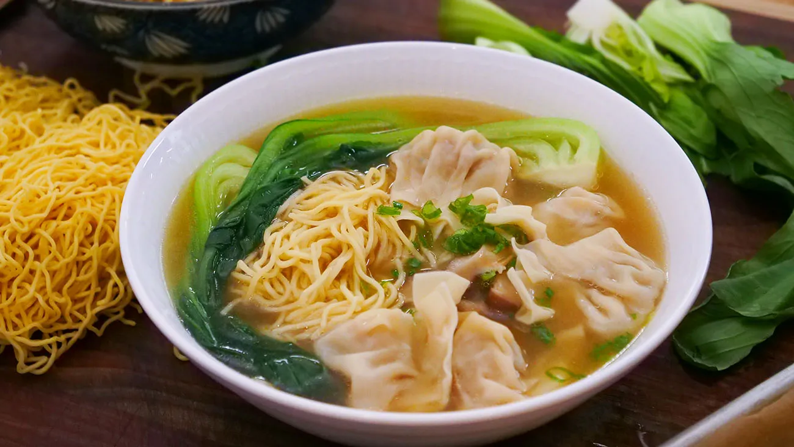

Wonton Noodle Soup

Description
Homemade wonton soup! These wontons are filled with a juicy pork and prawn / shrimp filling and will knock your socks off.
Ingredients
Wontons
- 1/2 pound shrimp, peeled, deveined and finely diced
- 1/2 pound ground pork
- Kosher salt and freshly ground black pepper
- 1 tablespoon oyster sauce
- 1/2 teaspoon sesame oil
- 16 wonton wrappers
- 1 large egg, beaten
Quick Chinese Chicken Broth
- 2 quarts cold water
- 2 to 3 ounces low-sodium chicken base
- One 1-inch piece ginger, thinly sliced
- 2 cloves garlic, smashed
- 3 scallions, smashed and cut into 2-inch pieces
- 3 whole black peppercorns or a pinch of freshly ground black pepper
- 1 teaspoon oyster sauce
- 2 to 3 drops sesame oil
- 1/2 to 1 teaspoon kosher salt
Noodles and Assembly
- Kosher salt
- 4 ounces noodles, such as spaghetti or dried instant ramen
- 2 scallions, thinly sliced
- 2 tablespoons cilantro leaves
Steps
- For the wonton filling: Place the shrimp, pork, 1 teaspoon salt, 1/2 teaspoon pepper, the oyster sauce and sesame oil in a medium bowl and mix with your hands to combine. Let marinate while you prepare the stock. (If time allows, marinate for at least 20 minutes and up to overnight; refrigerate if marinating for more than 2 hours.)
- For the broth: Bring 2 quarts water to a simmer in a large saucepan or pot and whisk in the chicken base until completely dissolved. Add the remaining broth ingredients and let simmer for at least 5 minutes.
- Continue making the wontons: Bring a large pot of salted water to a boil. Place about 1 teaspoon of the filling in the center of 1 wonton wrapper. Moisten the edges with some of the beaten egg. Pinch in all the sides to make a small sack, enclosing the filling. Transfer to a plate. Repeat with the remaining filling and wrappers.
- For the noodles: Add the noodles to the boiling water and cook according to the package directions. During the last 3 to 5 minutes of cooking time, add the wontons and continue to boil until the wontons are cooked through and float to the top. Drain the noodles and wontons.
- For the assembly: Ladle 2 cups of the broth into each of 4 deep bowls. Divide the noodles and wontons among the bowls. Garnish with the scallions and cilantro.
Home